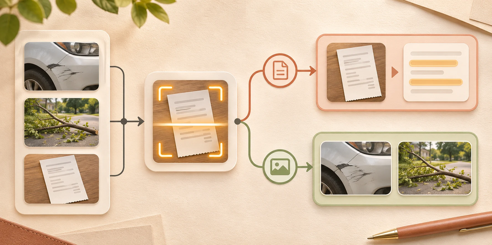

理赔影像智能分流
先判断每张影像要不要读字，再把调用用在该读的那一批。Decide which images need OCR first; spend model calls only on those.

理赔流程里，证件、票据这类标准影像已走现成 OCR。剩下的照片要先进视觉大模型，判断「这张图要不要读字」。
问题在于，很多照片根本不需要读字——一张现场破损照、一个室内全景。它们仍占着一次模型调用。
但直接砍掉调用也不行：真正需要读字的影像被漏掉，损失的是业务信息。
In claims, structured images — IDs, invoices — already go through existing OCR. The rest hit a vision model first, to decide whether this image needs text read at all.
The problem: plenty of photos never need it. A damage close-up, a room overview. They still spend a call.
But cutting calls blindly is worse: the image that did need reading gets skipped, and the loss is business information.
两类错误不等价。
- 把不需要 OCR 的影像送去后续环节 → 多一次调用，成本可算
- 漏掉需要 OCR 的影像 → 丢失业务信息，代价不可逆
所以评价口径必须是需 OCR 影像的召回率，不是整体分类准确率。
还有一个更基础的判断：分类回答「这张图是什么」，路由回答「下一步怎么处理」。用分类准确率评价路由，是在答错题。
The two errors are not equivalent.
- Sending a no-OCR image downstream → one extra call, a countable cost
- Missing an image that needed OCR → lost business information, not recoverable
So the success metric has to be recall on images that need OCR, not overall classification accuracy.
A more basic distinction: classification answers “what is this image”; routing answers “what happens next”. Judging routing by classification accuracy is answering the wrong exam.
放弃了「整体准确率」这个更漂亮的指标。
整体准确率通常更高、更好汇报。但它会把两类错误混在一起，掩盖漏检。
代价：验收要做专门的漏检标注，比跑一次整体准确率费事得多；汇报时数字也没那么漂亮。
换来的是：评价口径和真实损失对齐。
I gave up overall accuracy — the prettier number.
Overall accuracy reads higher and reports better. It also blends the two error types and hides the misses.
The cost: acceptance needs dedicated miss-labelling, far more work than one accuracy run, and the reported figure looks worse.
What it buys: the metric lines up with the actual loss.
上线后看两件事，不看第三件：
- 该读的字有没有漏 — 需 OCR 影像的召回率
- 调用次数降了多少 — 视觉大模型调用量
- （不看）整体分类准确率 — 只作辅助参考
因为路由的目标是「下一步处理对不对」，不是「这张图认得多准」。
Two things watched after launch, one deliberately not:
- Did we miss text that needed reading — recall on OCR-required images
- How far did calls drop — vision model call volume
- (Not watched) overall classification accuracy — auxiliary only
Because routing is judged on “is the next step right”, not “how well is this image classified”.
观察到：视觉大模型调用量下降约 25%。
这个数字的边界：这是调用次数，不是账单金额。调用量下降不等于费用同比下降——不同分辨率、不同模型档位的单价不同。
还不可对外验证：没有公开试用入口；系统在团队内运行，不是公开产品；没有委托方或客户名称可披露。
Observed: vision model call volume fell roughly 25%.
What that number is not: it is call count, not billing. Fewer calls does not mean proportionally lower cost — unit price varies by resolution and model tier.
Not externally verifiable: no public demo; the system runs inside a team, not as a public product; no client or business unit can be named.
我会在需求阶段就把「漏检样本怎么收集」定下来，而不是等到验收。
因为召回率成立的前提，是能拿到足够多「该读但没读」的样本。这需要业务方从一开始就参与标注。事后补，样本质量和数量都不够。
更早把这件事写进协作约定，比事后解释「为什么这个指标更重要」有用。
I'd settle how miss-samples get collected during requirements, not at acceptance.
Recall only works if you have enough “should have been read but wasn't” examples. That needs the business side labelling from day one. Collected afterwards, both quality and volume fall short.
Writing that into the collaboration agreement early beats explaining later why the metric matters.